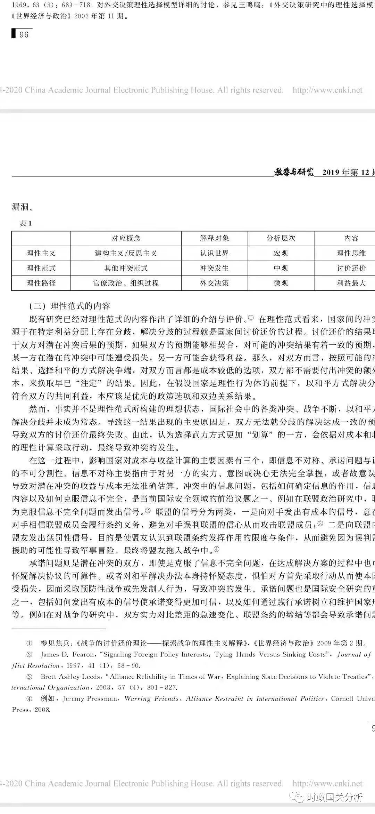

收录于合集

作品简介
【作者】 董柞壮，南开大学周恩来政府管理学院讲师。
【排版】 梁鑫昱
【 来源 **】 《**教学与研究》2019年第12期
国际冲突研究的理性范式:争论及启示
内容提要
理性范式是当前国际冲突研究领域的主流范式之一，在国家间冲突、内战和族群冲突等议题上应用广泛。这一范式聚焦国家间双边互动层次的因素，关注冲突发生前讨价还价过程中的信息问题、承诺问题和议题不可分割性，并以之解释讨价还价的失败与冲突的发生，从而塑造了冲突研究以信息和承诺为双核心的研究导向。理性范式通过研究冲突发生前的博弈过程，超越了争议议题性质的差异，强调国家利益的互动属性，因而在解释冲突问题上具有普逼的意义。理性范式是冲突研究范式演进的结果,具有较强的可扩展性与可操作性，为国际关系其他领域中层理论的创新提供了可行思路。就理论本身的建构而言，理性范式的理论化水平较高，概念指标与逻辑推演明确简约。这能够为中国的国际关系理论创新提供借鉴，即在经验观察、创新概念的同时重视理论的逻辑性与方法性，使理论创新更具普逼现实意义与深刻学理价值。
文章导读
在国际政治中，国家间战争、族群冲突、内战等各类冲突，给全世界造成巨大的损失，避免冲突、实现和平是全人类的共同利益所在。如何解释冲突的原因、过程以及结果,进而化解争端、预防冲突、促成合作，是国际冲突理论研究的主要内容。为此，国际关系学者从体系、双边、国家与社会、决策团体以及决策心理等多个层面尝试解释冲突的发生，并形成了丰富多样的冲突理论谱系。其中双边层面上的理性范式最具活力，是当前美国学界冲突研究的主流范式。在理性范式看来，冲突既非因贪婪而起，也非由恐惧所生，更非决策者任性而为，而是国家间在冲突前的危机阶段讨价还价失败所致，最终使用武力成为国家解决冲突最"理想"的方式。那么，理性范式的解释力来自何处？为何被广为接受使用？本文旨在深人讨论理性范式的内容、特征及其价值，评估理性范式的发展与局限，并探索这一范式对中国国际关系理论创新的参考意义。
一 、理性概念与理性范式争论 ****
理性范式是建立在"理性"基础上的理论。然而，理性既是国际关系理论中应用最广泛的概念之一，也是被混淆和误用最多的概念之一。理性概念在政治学和哲学中意涵丰富、体系庞杂，在国际政治中亦是如此。就理性的对应概念而言，理性主义在政治理论中与保守主义对立存在，在英国学派中则与现实主义、革命主义作对比，在美国传统的国际关系理论中与建构主义或反思主义相对应。这一复杂对立关系表明，在国际关系中讨论与理性相关的话题，必然首先要进行明确的概念界定。在当前的国际关系研究中，无论是在对外政策分析还是各层次理论构建中，理性这一概念都占据重要地位。例如理性主义与建构主义间的争锋，被视为国际关系学科史中第四次大辩论的主要内容。此次辩论中，建构主义主要以价值观念、规范来分析国家的行为动机，理性主义则以国家的目标来解释国家的行为。与建构主义相对应的理性主义，追求"在中立基础上，把价值、规范、历史、直觉、经验与传统因素剔除出去"，以自然科学的研究思路为参考来研究国际政治现象，探索国际关系中的科学规律。
（一）国际政治中的理性争论
理性是西方社会科学研究的思维内核，受理性主义与建构主义间的辩论以及"理性人假设"的影响，理性在国际关系研究中的影响力大为扩展，应用日益广泛。然而，国际政治研究中理性的概念内涵与外延在具体使用中缺乏澄清，存在被误解误用的现象，甚至表现出被滥用的趋势。如有研究指出，在对外政策分析中，理性的概念不适于分析具体的安全问题或外交政策，也不应被用于讨论行为者或其行为的理性与否。④具体而言，理性被误用往往表现为以下四个方面。
第一，理性的对象不明确。理性用以描述什么，是表示行为者的一种属性，还是表述一类行 为的特征?即理性指的是行为者本身性质，还是行为者的特定行为。在大多数国际关系研究中， 国家或决策者通常是最主要的行为体，并被"假定"为是理性的行为体。做出这一假定是因为国家被看作由群体掌握的机构，受国内政治、决策思维、决策团体构成等的影响，决策群体成员的 理性并不必然带来国家行为的理性。因而在将国家作为行为者的研究中，理性的对象主要是国家的对外行为而非国家本身的性质。对决策者做出这一假定是充分考虑到人的情感、性格等因素具有不确定性，所以借鉴经济学的理性人假设（homoeconomicus）。在国际政治实践中，判断对外政策决策、政策行为是否足够"理性"，其标准就是决策者是否以理性人的方式作出了决策，即行为者的行为是否理性。可见，在包括国际冲突在内的国际关系研究中，理性主要描述行为者的行为而非行为者自身。
第二，理性范式等同于博弈论。理性范式在国际关系研究中的发展和应用，很大程度上借鉴了经济学中的博弈论方法，通过构建数学模型来分析决策过程。博弈论方法的使用，是理性范式不同于其他理论范式的显著特征之一，也是理性范式的方法源泉之一。但是，博弈论方法只是理性范式最直接的语言体现，却并非理性范式本身。以理性范式研究冲突与合作问题，除博弈论外还可以选择其他多种研究方法。例如，在研究联盟间的讨价还价问题上，不同的学者采用了定量研究、案例分析等方法。随着社会网络分析等方法的完善，理性范式所能够应用的方法也更加丰富。
第三，理性是"应然"还是"实然"。前者的逻辑是行为体应该坚持理性以实现预期收益最大化，然而行为体坚持理性并不会必然实现这一目标;后者的逻辑是就效果而言行为体大体上遵从了理性原则，但是现实中非理性的选择与行为比比皆是。事实上，理性既非"应然"也非"实然"，而是研究者所虚拟出来的理想状态，以实现研究中的三类目标。一是现实政治决策过程中存在众多影响因素，决策程序、决策成员以及信息的不断更新，导致分析决策过程面临信息过多的困境，通过虚拟的"理性"假定有助于简化分析，提高分析的可行性。二是在简化信息的基础上，能够建立更加简洁的理论模型，提高理论的可操作化水平。三是通过虚拟的理想状态与现实状态的对比，找到两者间的差异，第四，理性是否存在程度差别。在国际关系研究中，理性与非理性相对应，那么两者之间是否存在不同程度的理性呢?在对外决策行为研究中，理性呈现出不同的程度。按照自低到高的排序，除非理性外理性的程度可以划分为最低理性（minimal rationality）、有限理性（bounded rationality）和完 全理性（optimal rationality）。最低理性即行为体有意识地采取行为，且这一行为与实现特定目标相关联。有限理性是对理性假定的发展，认为在生理等条件的限定下，人类不可能做到完全理性，且理性无法与感性因素彻底割裂，最优结果的达成是不可能的。完全理性则认为如果行为者有固定 的偏好，并为之采取相应的行动，最终可以实现预期效益的最大化。由最低理性到有限理性，是在排 除感情因素的基础上，对达成预期效益更高的进步。完全理性则进一步排除感性因素，并肯定效益实现最大化的可能性。理性范式所采用的是有限理性的假定。
（二）国际政治中的理性分类
理性是国际关系理论建立的基础性概念之一，主要的宏理论、中层理论和微观理论以行为理性为 假定，或讨论理性行为的动因、影响及其作用机制，或研究影响理性程度的因素以及理性假定的前提条件等。鉴于理性在理论建构中的重要价值，以及在具体应用中的多样性，因而有必要梳理理性概念，澄清理性的相关争论。
根据概念的含义与操作，国际关系理论中的理性大体可以分为三类。一是理性主义（rationalism），与建构主义（constructionism）或反思主义（reflectirism）相对应。理性主义同后者一道被视为分析国际政治现象的两种路径。理性主义主要表现为遵从理性思维，有明确的方向和依据，认为以理性思维为指导进行逻辑推理，能够获得有关国际关系的有效知识。理性主义普逼强调国家在对外行有的新现实主义、新自由主义等理论都属于理性主义的范畴，与建构主义或反思主义理论存在本质差 别。值得注意的是，理性主义本身也容易被误用，忽视理性主义的理性思维本源，而将其等同于现实 主义逻辑中的利益驱动、实力驱动，无视了新自由主义等理论同样属于理性主义。就理论层次而言，理性主义主要是宏观层面的概念，涉及认识论与方法论的哲学基础。
二是理性范式（rational paradigm）。这是冲突研究中的一种思维模式，主张通过讨论冲突发生前的博弈过程，寻找导致冲突最终是否发生的影响因素。当然，关注冲突发生过程的理论并不限于理 性范式，“走向战争”(steps to war）等同样考察的是冲突的升级过程。与"走向战争"理论关注冲突过程中的权力因素不同的是，理性范式最大的特征在于假定行为体为完全理性，并以博弈论的方法 分析预期成本收益对冲突发生的影响。狭义上，理性范式是詹姆斯·费伦（James D.Fearon）于 1995年发展的分析框架，用以分析在冲突、合作等议题中的国家对外政策行为，认为冲突的发生是国家间讨价还价失败的结果。在冲突研究中，理性范式相对于其他解释冲突发生的范式而存在，如国内政治、战略竞争等理论。理性范式是中观层次的概念，考察的是冲突发生过程中国家间的互动逻辑。
三是理性路径（rational pattern）。作为格雷厄姆·艾利森（Graham T.Allison）发展的三种外交政策分析模型之一，理性路径用以解释外交决策过程，与官僚政治模型、组织过程模型相对应。理性行为模型用以解释决策者在面临多个政策选项时，能否做出有利于实现利益最大化的选择。③理性选择模型主要是微观层次的概念，即以决策者为行为体，关注决策者的行为逻辑。理性路径即"理性选择"的应用并不限于国际关系，在公共政策等社会科学研究中亦有广泛应用和讨论。
对上述三者的对比可以参见表1。三类"理性"的解释对象、应用范围、基本内容都完全不同。

(三）理性范式的内容
既有研究已经对理性范式的内容作出了详细的介绍与评价。在理性范式看来，国家间的冲突来源于在特定利益分配上存在分歧，解决分歧的过程就是国家间讨价还价的过程。讨价还价的结果取决 于双方对潜在冲突后果的预期，如果双方的预期能够相契合，对可能的冲突结果有着一致的预期，即 某一方在潜在的冲突中可能遭受损失，另一方可能会获得利益。那么，对双方而言，按照可能的冲突结果、选择和平的方式解决争端，对双方而言都是成本较低的选项，双方都不需要付出冲突的额外成本，来换取早已"注定"的结果。因此，在假设国家是理性行为体的前提下，以和平方式解决分歧，符合双方的共同利益，本应该是优先的政策选项和双边关系结果。
然而，事实并不是理性范式所构建的理想状态，国际社会中的各类冲突、战争不断，以和平方式解决分歧并未成为常态。导致这一结果出现的主要原因是，双方无法就分歧的解决达成一致的预期，导致双方的讨价还价最终失败。由此，认为选择武力方式更加"划算"的一方，会依据对成本和收益的理性计算采取行动，最终导致冲突的发生。
在这一过程中，影响国家对成本与收益计算的主要因素有三个，即信息不对称、承诺问题与议题导致对潜在冲突的收益与成本无法准确估算。冲突中的信息问题，包括如何确定信息的作用，信息的内容以及如何克服信息不完全，是当前国际安全领域的前治议题之一。例如在联盟政治研究中，联盟为克服信息不完全问题而发出信号。联盟的信号分为两类，一是向对手发出有成本的信号，意在使对手相信联盟成员会履行条约义务，避免对手误判联盟的信心从而攻击联盟成员;二是向联盟内的盟友发出惩罚性信号，目的是使盟友认识到联盟条约发挥作用的限度与条件，从而避免因为误判盟友援助的可能性导致军事冒险，最终将盟友拖人战争中。
承诺问题则是潜在冲突的双方，即使是克服了信息不完全问题，在达成解决方案的过程中也可能怀疑解决协议的可靠性。或者对和平解决办法本身持怀疑态度，惧怕对方首先采取行动从而使本国蒙 受损失，因而采取预防性战争或先发制人行为，导致冲突的发生。承诺问题也是国际安全研究的重点之一，包括如何发出有成本的信号使承诺变得更加可信，以及如何通过践行承诺树立和维护国家形象等。例如在对战争的研究中，双方实力对比差距的急速变化、联盟条约的缔结等都会导致承诺问题凸显，为避免因承诺问题导致的误判，国家可能选择预防性战争等先发制人手段，从而加剧了战争发生的可能性。
议题的不可分割指由于议题本身的性质，导致双方不可能就争议问题达成解决方案，即双方不存在博弈或讨价还价的空间。此类议题包括具有特殊意义的领土主权归属问题、历史遗留问题等。传统上议题的不可分割只是被看做是非充要条件，并不是导致冲突的关键因素。然而，最近的研究开始就这一问题进行反思，并以实证的方式来证明在部分议题领域，议题的不可分割性确实在冲突的发生中综上，以理性范式的视角来看，各类国际、国内冲突发生的根本原因是各方在危机阶段博弈失败的结果，使用武力成为一项"理性"的选择。双方在危机阶段决策的基础是信息，同时对双方达成解决方案的信心以及议题本身的性质也会影响决策者的判断。在方法上，理性范式的基础是行为主义，以形式模型（formal model）和定量方法为主要研究工具。
二、国际冲突研究的范式争论
国际冲突研究的"范式"（paradigm），即在研究中所使用的概念、方法和路径的集合，意味着 一类研究路径的传统与习惯。不同的范式在概念应用、方法选择、思想基础、判断标准上存在明显差 异，在回答冲突为什么会发生上也存在不同路径。因而有必要选择合适的标准来对比现有范式，这既是深入考察范式争论的首要条件，也是讨论理性范式的基础。
（一）既有范式的演进与分类
国际安全研究存在范式上的演变，不同类型范式的出现是多种因素驱动的结果。巴里·布赞（Barry Buzan）总结出五种驱动因素，即大国政治、技术发展、重大事件、学术争论和制度化，此外 库恩主义的科学观、科学社会学的发展也发挥了潜在作用。此类因素不仅影响国际安全研究的内容，也对国际冲突研究范式的演变产生影响。理性范式的出现与发展也是范式演变的结果。在国际冲突范式的演进过程中，以形式模型的方法讨论冲突过程中的讨价还价或博弈过程早已存在，主要是源于二战后学术界缺乏经验数据，不得已而进行的方法创新。就驱动因素而言，理性范式主要是以下五个方面原因作用的结果。
第一，大国政治寞定了冲突研究的基调。冶战后全球权力的分布、国际格局的变化，单极格局的到来标志着大国间的冲突可能性下降。专注于大国间安全关系的冲突理论转向关注普逼冲突的理论。
理性范式作为通约性强、涵盖各类国际和国内冲突的理论范式得到学界关注。而冶战后小国冲突不断、国内战争频发、恐怖主义等非传统冲突凸显，更是推动了理性范式的推广。
第二，科技的发展拓展了冲突研究的范畴。无论是军用还是民用科技，其发展的同时往往伴随着新的安全议题出现，加剧泛安全化的趋势。这一趋势使得冲突的范围不再限于国家之间，开始涉及更多行为体以及出现更多冲突类型。由此，国际冲突从缘由上变得更加复杂，在层次上更加多样，这为关注冲突过程的理论范式提供了用武之地。
第三，重大事件引导了冲突研究的方向。重大事件特别是突发事件，能够改变国际冲突研究的议程。重大的冲突事件往往并不是理论所能够预测或推导的，对于此类事件，讨论其直接原因及其过程更有研究价值。冲突研究的关注点也开始寻找具有普遍意义的解释过程的范式，而非寻找特定原因的范式。
第四，学术争论丰富了冲突研究的内容。冲突研究领域存在多种理论范式，不同范式的渊源、路了冲突研究的进展。理性范式是在国际安全研究中传统的形式模型基础上，结合经济学博弈论发展完善而来，是冲突研究范式争论进步的体现。
第五，制度化提升了冲突研究的影响力。制度化即学术共同体对冲突研究的理论范式的认同，并以多种途径传播、支持冲突研究的发展。就理性范式而言，自费伦将其发展完善以来，理性范式得到了国际冲突研究学者的广泛认同，相关的研究成果层出不穷，其应用也日益广泛。
国际冲突研究范式的演进带来了范式繁荣。在解释为什么会发生冲突时，根据研究对象的区别，现有理论可以划分为三类。一是对冲突原因的考察，即讨论导致冲突发生的具体因素或事由，这一流派出现较早。例如新现实主义主张结构因素是大国间发生战争的决定性因素，帝国主义战争理论则强调帝国间会因瓜分世界而发生战争。二是对冲突双方的考察，即通过寻找冲突方的特性来解释其发起冲突的原因，包括国家的政体类型如民主和平论，以及决策者的心理因素。三是对冲突过程的讨论，即将冲突的发生视为互动进程。自20世纪90年代起，国际关系学界就开始关注冲突的过程，并通过构建模型的方式来研究冲突的过程。在这一分类下，理性范式属于第三类即关注冲突过程，试图通过对冲突发生过程的剖析来探究冲突的根源。
国际冲突的研究范式在解释层次上也存在诸多差异。杰克·列维（Jack S.Levy）借鉴了肯尼斯·沃尔兹（KeethWaltz）发展的层次分析法，按照原因的层次，将冲突研究范式划分为体系层次、双边互动层次、国家与社会层次、决策组织层次和决策者层次，并对各层次内的理论进行了比较。如体系层次内有多种理论范式及其子范式，包括现实主义理论及其所属的古典现实主义、新现实 主义、防御性现实主义、进攻性现实主义、新古典现实主义，权力平衡理论，霸权理论及其所属权力转移理论、长周期理论等。按照这一分类标准，理性范式属于"国家双边互动"层次的范式，关注冲突涉及国家双边关系层面的因素。
（二）理性范式的特征
冲突研究的范式演进与分类表明，这一领域的理论极为庞杂，各理论流派所持的假定、核心逻辑差异较大，也获得不同类型的事实支持。理性范式关注冲突发生前的危机阶段，因为各类影响冲突发生的因素，都是在这一阶段发挥作用。例如在领土冲突发生前，领土的价值包括经济、战略、种族价值，潜在冲突双方的双边关系历史，以及双方的实力状况等，都是影响双方对冲突的成本一收益预期的重要因素。当冲突正式开始，各类因素则主要影响冲突的进程以及结果。因而对危机阶段的理论化考察，是讨论冲突发生的关键环节。总体而言，理性范式的特点表现为三个方面。
第一，关注冲突的过程，即冲突发生前的危机阶段（shadow of conflict）双方的博弈。与之对比，其他理论范式找到了解释冲突发生的部分普逼原因，在不同层面、不同视角下有效地解释了冲突 的发生。尽管在具体的逻辑链条上存在不同，但是此类理论的解释变量都是固定的因素，其解释的方式是从因素到结果。然而在理性范式看来，各类因素转化为结果需要过程，即危机发生的解释变量是在危机延续的过程中发挥作用的。例如结构现实主义理论主要关注体系层面的权力分布因素，以这一变量解释大国间的冲突，以及均势为何自动生成。其具体的逻辑链条是权力分布的变化，使得大国担忧本国的安全面临挑战，因而会采取各类制衡措施来实现权力的再平衡，最终表现出的国际结果是 均势的反复出现。②新古典现实主义则在此基础上加人了国内政治作为中介变量，即权力结构的变化会经过国内精英共识、社会凝聚力、国家动员能力等因素的传导，转化为一国的对外政策，影响制衡行为是否会出现以及何时出现，从而影响均势的实现。可见，理性范式关注冲突发生过程中的各类因素，如潜在冲突的双方沟通过程中的信息问题、承诺问题等。因此，相对于在冲突发生前即已经存在的因素，理性范式找到了新的解释变量，补充了既有的冲突研究理论。
第二，超越争议议题性质的差异。而与同样属于双边互动层面的其他理论范式相比，理性范式的关注焦点同样不同。实际上，大多数双边互动层面的理论范式，都强调争议问题的作用，即议题本身 的特性导致了冲突的发生。例如，“国际竞争”（international rivalries)）理论强调如果国家间存在战略、利益等的冲突，并且此类冲突短期内无法解决，那么国家间发生冲突的可能性就会提高。“走向战争”(step to war）范式则发现国家间存在争议的议题的性质不同，导致冲突发生的可能性也随 之变化，其中领土争端最容易导致双边冲突。与强调争议议题的理论类似的是，理性范式也重视议题本身的性质差异，即具有不可分割性的议题会导致冲突更容易发生。但是，议题不可分割性的作用是有限的，即其本身不能独立地导致冲突的发生，在冲突的讨价还价中不能作为关键的解释变量而是通常与其他因素结合来发挥作用。 因而在理性范式看来，存在争议的议题本身仅是战争或冲突发生的充分条件，而非必要条件。争议议题作为战争或冲突发生的诱因，需要经过一系列的政治过程才能发挥作用，包括国内政治的作用以及国家间的博弈过程。
第三，强调国家利益的互动特征。理性范式认为战争与冲突的根本原因是国家认为战争更"划算"，即战争手段在实现利益时的效度更高。国家的目标或利益始终存在，但是在理性范式看来，实 现利益的方式及其成本与收益不尽相同。所以，国家最大化的利益并非是固定或国家单方面确认的，而是在考虑了与对方可能的互动结果后所得出的结果。同时，理性范式解释的是预期"净收益"对国家冲突决策的影响，而非基于相对收益或绝对收益。例如，就理性范式对领土争端的解释而言，争端的双方都试图获取全部的争议领土，但是任何一方在做出战争决策时，主要依据与对方发生战争的预期结果，通过对双方实力、决心等的判定来评估冲突可能的成本与收益，如果双方的预期的冲突结果存在重叠，那么就有了讨价还价的空间，争议领土的分配最终取决于讨价还价的结果。因而在各类争端中，国家对利益的偏好以及最终所获得的利益，都是互动的结果。
在国际冲突的研究领域中存在众多理论流派，但是不同流派间更多呈现演进关系而非理论争鸣，如理性范式建立在对现实主义"权力分布导致冲突"的批判之上，而关注决策心理、国内政治的相关理论则批判理性范式不符合现实。尽管如此，不同的冲突理论关注不同类型的冲突，而理性范式因为包容性更广而获得了更多的拥趸和影响力。
（三）不足与研究进展
尽管应用广泛，理性范式在经验与逻辑上仍存在诸多不足，如对和平现象解释力不足、逻辑有缺陷、事实支撑与经验验证困难等。学界对其批评与质疑也从未停止。理性范式受到质疑与挑战的根本原因在于，在冲突过程中如何将非理性的因素彻底剥离。尽管在理论构建中，做出片面假定、强调特定因素是必要的，但是理性范式对非物质层面的因素完全忽视，如领导人的心理、情绪等，此类因素在冲突决策中同样发挥重要作用，但是无法纳人讨价还价的分析框架。此外，在理论的构建与解释力上，理性范式的效果显著，但是这一范式的政策意义仍有待挖掘，其理论意义远大于政策影响。
鉴于理性范式存在的问题，学界也不断对这一方式修正、发展。当前主要的研究进展是借鉴心理学等学科知识，完善自身的逻辑关系。例如有研究认为，既然冲突的讨价还价过程是动态的，双方在博弈过程中的偏好也不会如理性范式所假定的一成不变，这为考察非理性因素发挥作用、纳人心理学的微观分析提供了空间。对理性范式的讨论已经开始结合心理学与经济学的相关知识，考察偏好的动态变化对博弈的影响。未来随着与微观视角的结合，理性范式有望在一定程度上克服其自身缺陷。
此外，国家间的冲突是国内政治过程与国家间互动双重作用的结果，但是既有范式对国内政治变量的讨论较少，相关的理论也一直在探讨如何将国内政治纳人冲突研究的分析中。理性范式在讨论危机决 策中的成本收益时，注意到了国内政治因素，但是其讨论仍不充分。最新的研究已经从国内政治方面 对理性范式提出挑战，试图完善理性范式的逻辑。例如考察决策者与决策团体的社会认知偏好、认知 动机、人格特征等因素的作用，而不再限于对国内制度类型、政治派系等传统国内政治议题的讨论。这一研究思路也将成为理性范式继续发展的方向之一。
鉴于理性范式在冲突问题上具有较强的解释力，部分学者也将这一范式应用于其他领域的研究中。例如，查尔斯·格拉泽（Charles L.Glaser）发展出了外交政策的理性范式，将分析冲突问题的理性范式路径纳人外交政策分析中。即假设双方都是理性的行为体，通过对双方行为结果的预期以及采取合适的策略，实现行为效果的最大化。然而，将理性范式应用于外交政策领域具有诸多局限。
其存在的根本问题在于，在冲突中成本收益的计算相对简单，因为双方互动失败后的结果是武装冲突，所造成的主要成本是物质损失，主要收益则是对争议议题的支配权力。而在外交政策中，双方互动的形式除冲突外，还存在众多的外交选项。由此导致成本和收益的计算相对于冲突而言更加难以计算。在对国际合作的研究中，学者们也借鉴了理性范式的逻辑，发展了国际机制设计的理性范式。认为国家在国际机制的设计中，主要出发点是如何实现特定的目标，即机制所带来的收益是什么，并为实现收益而克服信息问题、承诺问题等可能的问题。
三、理性范式的意义与应用
理性范式提出后，得到了美国学界的普逼认可。当前对国家间战争与冲突、族群冲突、内战等各类冲突问题的研究，大多都基于理性范式的框架。就理论的构建与应用而言，理性范式影响力极其广泛。这与其理论化程度较高、研究界限明确、可拓展性强等特性有密切关联。其在国际冲突理论研究中的意义主要有如下三个方面。
(一）普遍解释各类冲突议题
国家间的战争与冲突是国际关系研究的经典议题，但是21世纪以来的"新战争"（New Wars)得到了学界更多的关注。此类战争不同于传统的国家间战争尤其是大国间战争，一方面表现为非大国间的战争日益凸显，另一方面国家与非国家行为体间的冲突开始得到关注，内战、叛乱、族群冲突 等国内冲突开始成为安全研究的热点。推动这一研究上的转向最重要的原因是二战后国际政治现实的 发展，主要体现为三个方面:大国战争的频率下降，造成的人员伤亡数量减少;非大国间的冲突数量增加，造成的人员伤亡数量上升;内战的频率上升，造成的人员伤亡数量猛增。
实际上，尽管大国间战争是国际体系变迁的决定性因素之一，相对于其他战争与冲突对国际格局的塑造力更强，但是其他类型的战争与冲突在冶战后日渐凸显。由此，国际安全研究开始重视对大国 战争之外的战争和冲突的讨论，包括众多看似"无足轻重"的小国间战争、内战等。此类战争与权力结构、大国兴衰并没有直接的因果关系，而传统上讨论关乎体系平衡的大国战争的宏理论在此并不适用。并且，非国家行为体如恐怖组织等日益成为战争的行为体，在冲突研究中主权国家不再是唯一的行为体，这对关注国家间关系的战争理论如结构现实主义提出了挑战。②因而，如何解释国际关系 中普逼存在的战争与冲突，提供更加有效的分析工具，而不是仅仅关注大国间的战争，是安全研究面 临的迫切理论问题。在传统的宏理论研究中，大国间战争被视为国际体系变化的原因和表现，对其讨论往往是基于国际环境的决定性影响，而非基于具体的危机决策过程。这一路径并不适用于大国战争 之外的战争与冲突讨论，因为不同战争的起因、影响缺乏共性。
理性范式对各类冲突升级过程的讨论则不同，在战争与冲突的原因、过程与结果之外，危机决策的理性逻辑存在共性。在理性范式看来，冲突的类型无论是国家间战争、内战还是国家与非国家组织 的战争，如果假设决策者是理性的，那么冲突能够发生的共同逻辑是"打仗比其他方式更划算"。无论冲突发起一方是国家还是其他政治组织，其目标或偏好是权力还是安全，所处的体系是单极、两极还是多极，一旦预期的收益超过了预期成本，就为决策者提供了发起冲突的充足动力。在冲突双方的博弈中，发起方希望通过采取行动，改变现状后的收益，超过改变的成本，即只有划算的时候才会采取行动。
在对冲突议题的研究中，理性范式并未对国际体系的性质做出先验性假设，即无政府状态（Anr- archy）既不是冲突发生的充分条件，也非必要条件。由此，以理性范式来分析国内冲突与国际冲突并没有本质上的区别，从而打破了传统上国际冲突与国内冲突的藩篱，能够同时应用于这两类冲突的研究，在战争与冲突议题的讨论中具有普逼意义。
(二）理论扩展性和操作性更强
理性范式的普及也得益于理论本身的扩展性较强，适用的议题领域更广。理性范式在冲突研究上框架。在冲突研究中，联盟的作用一直受到研究者的关注，盟友及其承诺能够改变实力对比，联盟对内对外发出信号的成本及其可靠性，会影响讨价还价中的信息判断，在研究中也广泛应用了理性范 式。国际机制则不仅能够传递冲突双方的信息，也能够在一定程度上解决承诺不可靠的问题，理性范式因而将国际机制与冲突研究结合起来。在其他更广泛的冲突议题上，为避免冲突发生的冲突预防问题同样适用理性范式，通过提供更多信息、对承诺提供更可靠的保证等，可以使得潜在冲突双方的讨价还价更容易达成;在冲突解决研究中，冲突发生后双方的互动可能给冲突双方的博弈增添变数，双方在博弈中的信息获取、掩藏与误判等问题有可能得到解决，从而改变讨价还价的进程与结果，促成 冲突的解决;在第三方干涉的研究中，第三方能够对冲突双方的信息获取与承诺可信度产生影响，无论第三方是加人冲突还是调停冲突，都会改变双边博弈的进程和复杂程度，在研究中也都广泛采用了除扩展性强、容易与其他议题嵌套外，理性范式也具有较强的可操作性。理性范式的模型简约，逻辑清晰，可拓展性强，在经验研究中具备较强的可操作性。理性范式将冲突发生的原因概括为信息不对称、承诺问题以及议题不可分割性，且三方面的因素能够在实践中得到观察，并加以操作和验 证。尤其是对于定量方法和博弈论方法，理性范式相对其他范式更加容易分解操作。
作为双边层面的理论范式，理性范式通过对冲突双方互动过程的抽象与建模，明确了信息不完全与承诺不可靠在讨价还价失败中的关键作用，加之两者易于获取经验证据加以操作，因而塑造了冲突研究关注信息和承诺的核心与导向，对相关冲突议题的进展产生了深远影响。
(三)提供中层理论创新思路
冷战结束后，国际关系中的大理论辩论呈式微态势，宏理论甚至被质疑已经终结。②国际关系宏理论的创新受到现实世界变化幅度、所需周期较长、理论建构学者人数少等条件的限制，目前正处于常规科学阶段。在这一阶段，国际关系学科的进步主要是中层理论和地方知识的扩展，而非宏理论上的重大创新。而中层理论和地方知识主要聚焦于特定的议题，关注在特定议题上不同行为者的行动逻辑，以及中观和微观结果的出现。理性范式的解释对象是具有普逼性的国家行为。通过捋国家抽象并简化为理性的行为体，理性范式可以有效地说明为什么国家会做出特定的行为，即在何种情境下会选择以冲突方式或者妥协来解决争议。在此情境下，中层理论和微观理论很容易受到理性范式的影响，接纳理性范式的思维路径和研究方式。由此，理性范式能够在常规科学阶段对国际关系学科的发 展提供更多的知识创新。此外，在国际关系研究中，尚未出现统一的对外政策分析理论。因为在双边互动层次以及在国家层次上，通过寻找普遍存在的因素来解释对外政策的路径效果不佳。但是，理性范式尝试将注意力转移到互动过程中，来解释互动过程以及结果的普逼模式，是构建对外政策分析理论的有益借鉴。
理性范式通过搭建国际关系理论的思维框架，有助于国际关系学科的独立与发展，并与国际关系史等知识相区别。国际关系学科自产生以来尽管有明确的研究对象，但是在方法上长期借鉴国际法、历史学等学科的方法，即在国际层面上以法律规范、历史演变来讨论国家间的关系。理性的引人以及理性范式等的发展，有助于国际关系学科形成专巾的研究方法，以之来分析国家的利益构成、战略目标、对外行为逻辑等。
四、对中国国际关系理论构建的启示
理性范式作为冲突与安全领域的主导范式，对中国国际关系理论的构建具有借鉴意义。尽管理性范式既非视野广阔的宏理论，也并未提供新的思想源泉，其参考意义主要体现在理论化程度高，即能 够捋议题的核心概念、合适的形式化方法、简洁的因果机制整合为统一的逻辑体系，使得理论解释力强、适用范围广。这为中国的国际关系理论创新提供了理论化的范例。
（一）理论化与理论创新
理论的生成与创新是内外环境作用的结果，如国际关系实践的变化、技术进步、理论间的争论与互相借鉴等。理论创新的路径也有多种，如中国国际关系理论的创新依据不同标准可以划分为"问题驱动"与"观念驱动"，或"思想创新"与"思维创新"等。就内容而言，理论创新既可以是对既有理论的扬弃与发展，也可以是全新学说体系的建立;既体现在本体论创新如发现新问题、新观念、新解释对象等，也表现为方法论创新，如开发新的论证解释方法、构建新的思维模式等。然而，在进行国际关系理论创新时，提出对现象与原因间关系的新解释并非唯一重要之处，在新理论生成的过程中"理论化"是其中的关键环节。
因为一种国际关系理论本质上是一系列有逻辑关系的命题，此类命题包含基于经验事实的可操作概念以及概念间的因果机制。由此国际关系理论的创新大致有两类，一是基于发现新的经验事实从而 产生新的概念，新的经验事实在理论中可被视为原因或结果，即通过找到新原因或新结果来获取新的知识;二是通过建立原因与结果间的新因果机制，提供更有说服力的解释。
理论化贯穿于这两个维度之中，并体现为两种不同的形式。一是从经验事实到概念的理论化，即在理论的构建过程中，观察事实并对其抽象化，以形成基本的假定与核心概念，这一理论化的本质是 简化。如理性范式将战争发生前的危机阶段的复杂互动，简化为双方就争议问题的讨价还价。二是因果机制的理论化，即对新原因或新结果带来的新因果关系进行抽象，以更加准确地解释因果关系，预 测尚未观察到的因果链条，得出具有普逼性的结论。如理性范式对讨价还价失败与战争发生的解释，通过引人讨价还价过程中的信息问题、承诺问题与议题不可分割性三项原因，重新建立了由因到果的 逻辑机制。当然，广义上的理论化也可以指围绕某一问题，建立相关的理论体系，用以澄清核心概念、界定研究范围，赋予相关研究统一的内核。理论化的对象包括因果关系、核心概念和研究方在社会科学研究中，理论化作为构建理论的方式有三个阶段，即预研究的理论化（theorizingduring the prestudy）、正式研究的理论化（theorizing during the main study）与基础理论化（funda-mental theorizing），理论化的基本过程是:观察经验事实，命名核心概念，建立和验证理论，形成具有普逼意义的结论。④理性范式同样遵循这一过程，即先观察战争发生的过程，发现多数战争并非是毫无预兆的行为，在战争发生前双方会经历讨价还价与危机阶段，在假定战争成本高昂的前提下，战争的发生只能是讨价还价失败的结果。据此理性范式通过形式化方法建立了模型和理论，提出了影响 讨价还价结果的三个因素，形成了战争和冲突研究的普逼理论法等不同理论的理论化程度受议题、解释层次等因素影响而存在差异，表现为三个方面。第一，理论化水平有高低之分。评价理论化水平高低的标准主要是解释力强弱与解释范围大小，主要依据是因果关系的理论化程度。理论化程度高意味着对因果联系的解释更加完备，解释力强的理论具有完备的逻 辑体系，能够对国际现象做出合理的解释;解释范围广的理论不仅能够解决单一的问题，在类似问题 的解释上也能够适用。就理论化过程以及评价标准而言，理性范式的理论化水平很高，不仅观察、抽象、提炼出了冲突发生的一般互动过程并加以形式化，同时对各类冲突的解释力强，也被其他议题的研究所借鉴。
第二，理论化是有限度的。并非所有的国际现象及其解释都能够被理论化。在理论构建过程中，尽可能捋核心的解释变量理论化，从而构建尽可能完备、解释力高的理论是可行的。而对于无法理论化的部分则放弃。例如在理性范式中，信息、承诺和议题不可分割性能够被理论化，但是无政府状态并非变量，而是常量，无论战争还是和平时期均存在，因而不具备理论化的基础，所以并未被考虑其中。当然，理论化也仅是理论建立或创新的一个阶段，即随着理论化的深人，理论也越来越成熟，理第三，理论化的难度与分析层次相关联。在国际关系中，体系层次理论的理论化难度相对较低， 理论化的程度较高。这是由于在体系层面，理论所解释的现象主要是大国战争与体系变迁，现象的分类清晰，前提假定与核心概念明确。而国家层次理论的理论化难度相对较高，理论化的程度也相对较低。这是因为作为解释对象的对外行为类别复杂，同时缺乏明确的核心概念。可见，对于不同议题。
在对外政策分析中，外交决策者与外交政策间的因果联系、外交政策与国际政治结果间的机制理论化难度极大，而体系层面国际关系理论的理论化难度相对更小。
（二）对中国国际关系理论创新的借鉴
理性范式对中国国际关系理论的构建有多方面启示，包括:推动中层理论创新，因为当前的国际 关系理论发展呈现出"议题导向"的特征，大辩论式的理论发展走向沉寂，宏理论的创新步伐减缓，中层理论尤其是关注互动过程的理论发展更具活力，就中层理论进行创新的前景更加广阔;重视形式化方法，尽管形式化方法门槛高、难度大，但是在逻辑严谨程度、适用范围上更具优势，是理论创新的可行工具。其中，理性范式的理论化水平是其突出特征之一，也是最值得中国国际关系理论创新借鉴的地方之一。中国的国际关系理论建立和创新必然要遵循理论生成的一般规律，从概括经验事实、创新核心概念开始，到提出解释框架与因果机制并加以验证，这一过程离不开对理论化水平的提升。
改革开放以来，随着中国国力与国际影响力的提升，学界对中国的国际关系理论研究提出了更高的要求，构建中国的国际关系理论或"中国学派"引发诸多讨论，相关的理论建设也取得了显著成 效。既有的中国国际关系理论创新路径主要有两条。其一是基于中国独特的历史与实践，归纳中国国际关系实践的历史经验，并据此提出核心概念。如考察中国古代国际关系思想，讨论古代国际关系的性质，以之来创新既有的国际关系理论。在对基于中国历史、经验、思想的国际关系理论概念挖掘的基础上，为中国的国际关系理论创新探寻历史基石。其二是在国际关系理论创新中植人中国思维，例如以蕴酒中国文化的"国家间的关系"类型来解释国际体采的特征与变化，构建不同于西方以理性为思维内核的国际关系理论。可见，既有的理论创新尝试主要体现为四方面特征:一是在凸显中国经验、思维的特色同时，力图证明其对理解国际关系的共通性，以建立普逼性的理论或认识为目 的;二是在理论创新时以概念为核心，通过提出新概念来对接中国经验、思维与既有国际关系理论; 三是侧重于体系层面的理论，在中层理论和微观理论创新上缺乏进展;四是在因果机制的讨论上仍需在中国国际关系理论构建的努力中，体系变化等研究议题、道义和关系等核心概念逐渐明晰，然而在将概念应用于理论并回答研究议题时，对作用机制的讨论尚不完善，即理论创新中的因果机制理 论化水平偏低。中国国际关系理论创新的初期阶段，表现为贡献中国智慧包括中国的历史经验、思想 观念和文化，即创造新概念、提出新理论范式，但是将此类元素提炼为概念并用以解释国际现象的时候，则需要完成高质量的理论化工作，对作用机制加以理论化。这并非是理论本身的问题，而是理论因此，在建设创新中国的国际关系理论过程中，有必要借鉴成熟的理论范式认识事实、经验概括、模式搭建的理论化方法。因为理论的构建与创新，并不限于单一理论的创造提出，更需要学术共同体普逼接受、广泛采用新理论的理论化路径，用以解决研究者自己提出的研究问题。随着中国的崛起带来大量国际关系新实践，与中国有关的相关经验事实是国际关系理论化最重要的原材料，为理论构建和创新提供了丰富的题材。在理论化的过程中，需要界定相关概念的内源、外延与操作标准，明 确因果机制及其作用路径，能否将因果机制简化为具有较强通约性的模型。
总之，理性范式作为冲突研究的主导范式拥有广泛的影响力，对这一范式的争论与发展值得更多关注。就国际关系研究者而言，除对其本身方法、逻辑的讨论外，也应关注并借鉴理性范式的高度理论化水平。在构建和创新中国国际关系理论的过程中，理论化程度即理论的逻辑完备性、方法科学性、可拓展性等需要给予更多关注，而理性范式则尝试探索出了一条可行的路径，值得进一步的关注研究。
_ ** _ ** _ ** _ 本文由国政学人推荐。**__